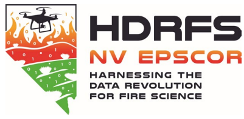
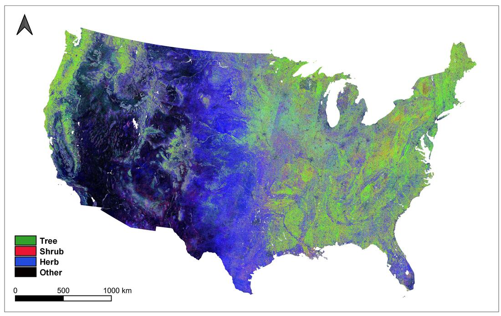

Grants & Support
Research Funding
Research grants and funding opportunities that have supported my work in wildfire science, forest ecology, and computational research.

EPSCoR Track-1: Harnessing the Data Revolution for Fire Science (HDRFS)
Increasing Nevada's capacity for wildland fire research, education, and workforce development. Addresses Grand Challenges by the National Science and Technology Council for reducing wildland fire-related disasters in the western U.S.
Visit Project →
The GigaFire Project
Interconnected research projects quantifying the state and dynamics of wildland fuels and the impacts of fuel management on fire severity, carbon sequestration, and water quality. A collaboration between UNR, CAL FIRE, and the California Air Resources Board.
Visit Project →